南海道遠征
2026/09/13
概要
南海道遠征は、2026年8月29日から31日までで行った旅行です。主な目的地は、松山周辺です。
主目標はわたたべこと、「私を喰べたいひとでなし」の聖地巡礼です。
元々は高山に行く予定だったんですが、友達にわたたべの布教に成功したため中学校時代の友達二人と共に行ってまいりました。
あとは試運転としてcanon ftにFUJIのISO400のカラーを二本通して撮影しました。（途中で露出を間違えたりフィルムをホテルに忘れるとか大ポカこきましたが。）
（ここに書いてあることは2026年八月末時点なので参考にする場合は各自調べてから計画を立てましょう。）
（ここで使われてる写真は全部デジタルです。またフィルムの現像が上がったら更新します。）
一日目
一日目
まず、太田川駅南口に6:30に集合、この時点でテンションはMAXですな。そしてそのまま32分発普通弥富？に多分乗りました。で新那古野駅こと 名鉄名古屋にざっくり7時くらいにはついてました。で、7：26分那古野発ひかり733号広島行きに乗り込みました。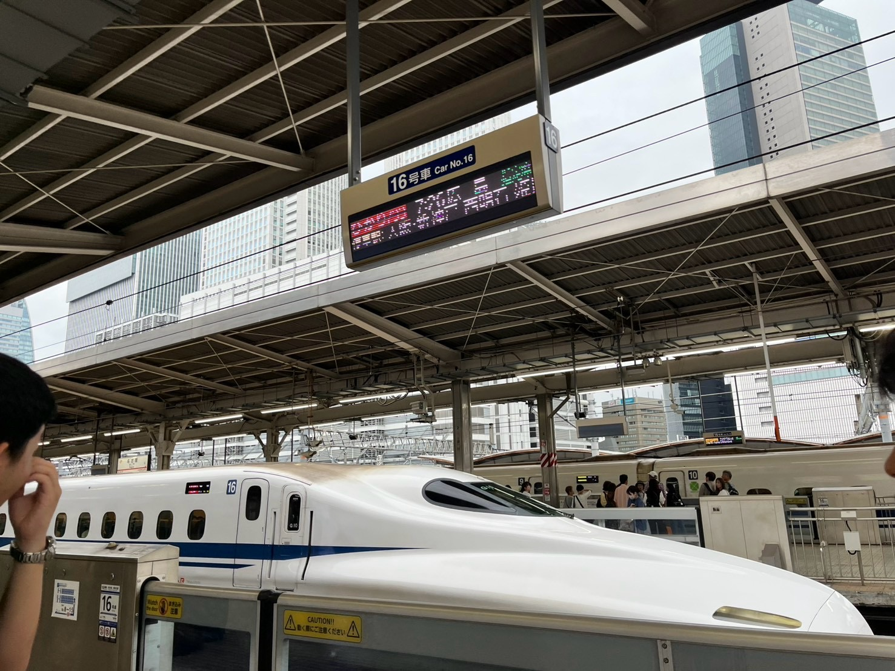
この時Sony HDR-CX550Vで名古屋ー岡山間を撮ってたんです。ほんとは乗っけたいところなんですが友人との会話と名前が駄々洩れなので断念・・・。 一人旅ならこうはならないけど、虚しいからなしゃーない。そして9：15分岡山着、こっから9：25分発のしおかぜ5号に乗らなきゃなりません。結構この特急料金とかシステムが複雑でした。恐らく元から切符を発券してるかデジタル的なアレをやってないと乗り換え口から降りれません。 なので普通の改札から出て切符を買わなければなりません。
あと余談なんですが、JNRの遺産一杯で未だ特殊会社・実質の国営企業ことJR四国君はほぼICカードが使えません。ってか四国自体があんまりICが使えません、気分として切符がマストと思っておきましょう。ICが使えるのは奇跡に近いです。
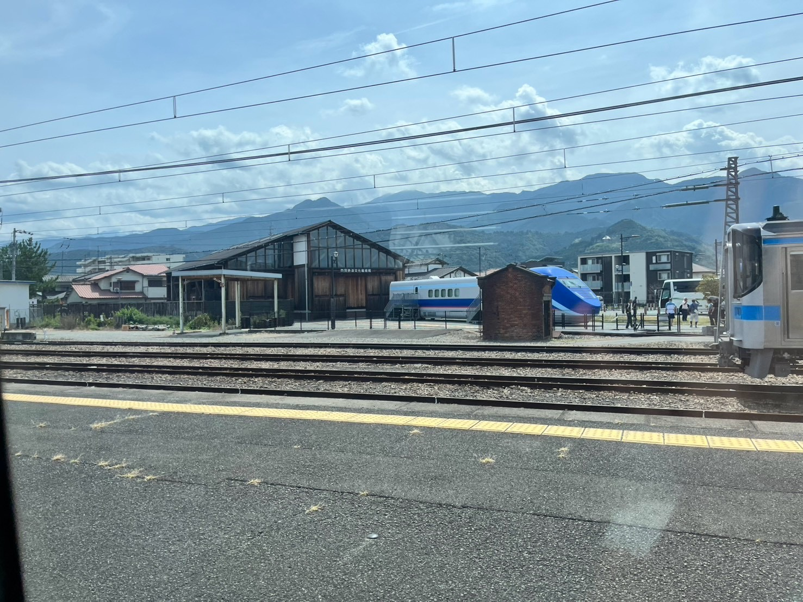
（今回の旅行中だと使えたのは伊予鉄オンリーでした。） なので事前に買ってない場合、みどりの窓口なりなんなりで特急券と乗車券を買わないといけません、ICが使えるからと言って、いけしゃーしゃと改札を入ると特急車内でキッチリ徴収されるので諦めて上納しましょう。特急券・乗車券で片道約7000円です。 筆者は無茶苦茶高いと感じるんですが、ほかの地域はどうなんですかね？今回は自由席で行ったためこれで済んでますが帰りに見た案内だと2027年から全席指定席になるそうなんで本当に7000円かかるようになります。末恐ろしいですなぁ。
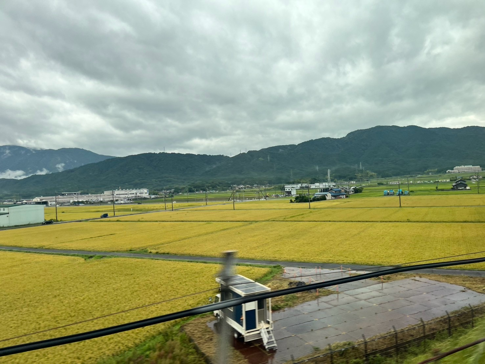
で電車に滑り込み、車掌さんがやってきて値段とシステムの洗礼を受け、振り子式の電車に多少酔いながら四国瀬戸内の風光明媚な景色に舌鼓を打ちながら12:10分に松山駅に到着、
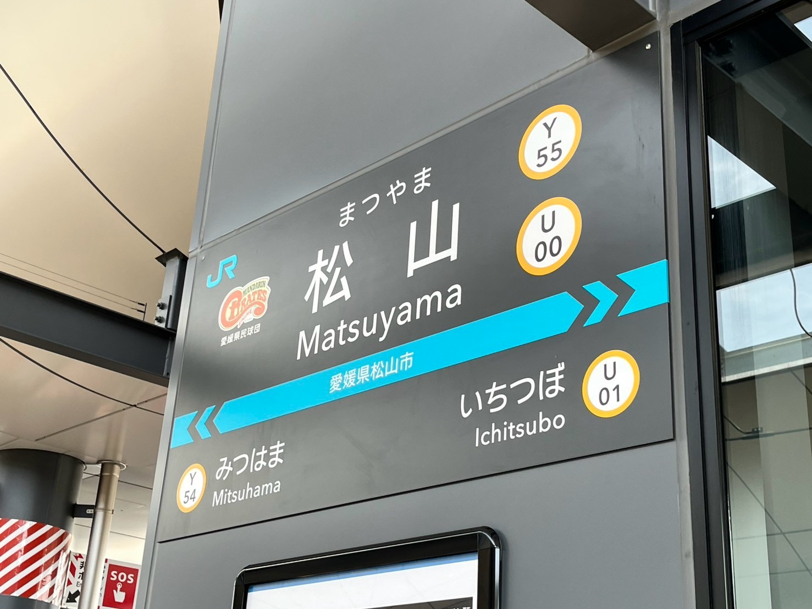
昼食は駅ビル？にある麵処で頂きました。さすがに讃岐が近いだけあって結構うまかったです
さてこっから聖地巡礼の始まりです。（場所とかはGoogleマップとかで見てください。説明へたくそなんで）
伊予鉄の大手町駅～乗り継いで松前駅へ。でこっから歩いて割烹仕出し川崎屋の通りに行きました。 そうです。作中だと比名子の実家がある設定のとこですね。海沿いかな～と思ったら港の近くの感じですな。知らん人だと普通に通し過ぎそうな感じの場所です。
でそっから海沿いに結構歩いて塩美橋です。作中だと汐莉との初顔合わせ、結構印象に残る場面です。漫画・アニメで見たまんまだったので感動を覚えました。
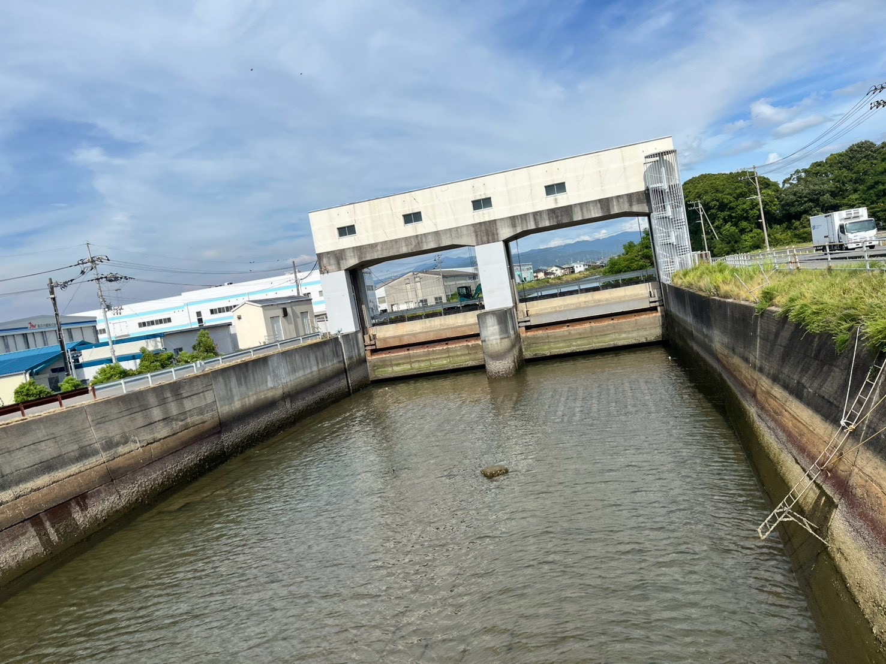
そっからさらに歩いて塩屋海岸、比名子と汐莉のぶっちゃけトーク場＆歪んだ契りの場所ですね。お前らしっかり会話せぇ・・・。その時たまたま海に入っていった人がいたので自認比名子と友達と笑ってました。
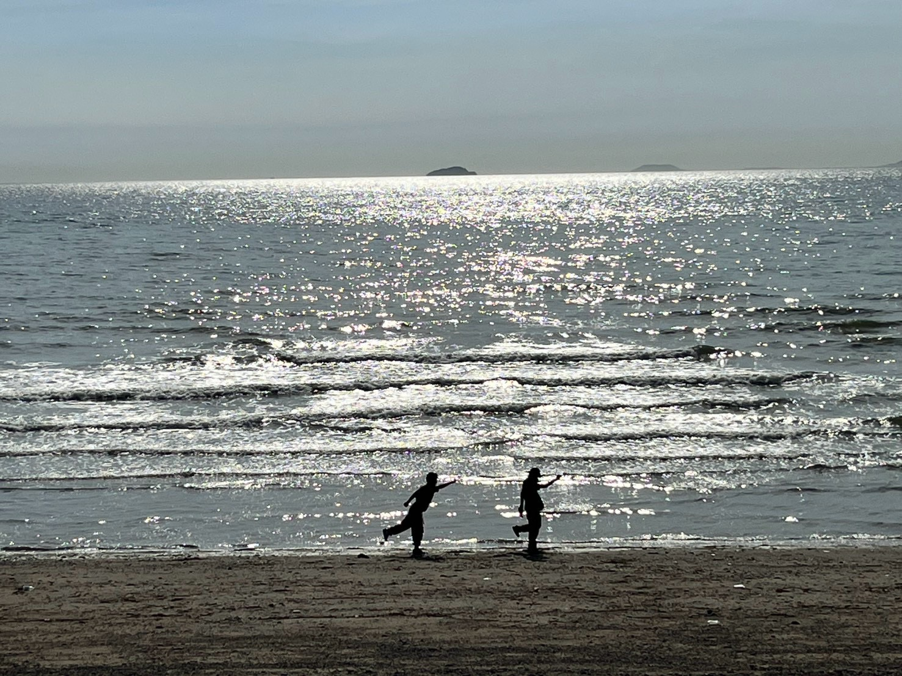
そこでノルマンディーごっことかして遊んでこっから電車で行くこともできたんですがなるべく金をケチりたいのとノリで比名子と同じように歩いておおたの浜まで歩いて行きました。 友達とかは大丈夫だったんですが私は暑すぎて頭痛が始まってました。
（後で調べたら熱中症の初期状態っぽいっすね、みんなは気をつけてください。）で、歩いて歩いて伊予農業高等学校まで行ってました。
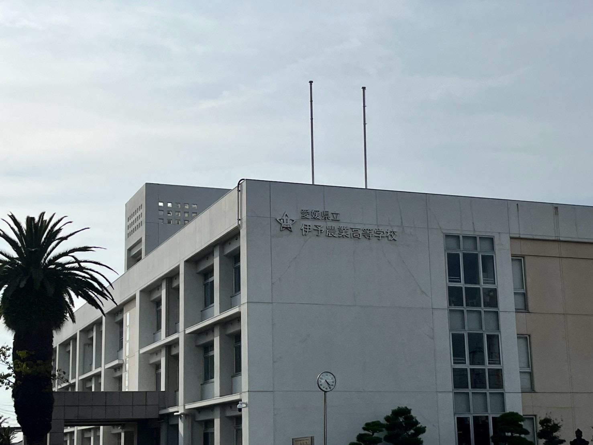
でここは作中”潮見高等学校”としてでてくる比名子たちの母校です。正門のところに立ち止まってスマホを見るなって書いてあってビビりましたが在校生向けっぽい？かな？まぁ注意することに限りはありませんので注意しましょう。
（近くにファミマがありますがこれも作中だと美胡から比名子に伊予彩へのお誘いをしたとこなんで見たい人はしっかり見ましょう）
そっから歩いて伊予市観光物産協会ソレイヨに行きました。ホントはここに美胡美胡パネルがあるらしいのですが・・・生憎しまってました。ま、しゃーない。
切り替えて伊予市市役所に行ってきました。ここも閉まってましたがパネル等々は窓に張り付けるように設置されてたので、キッチリ写真を撮ってきました。なんかパネルに人魚がいるのは知ってましたがQRコードがあってそこ限定の音声が聞けました。再生数を見て「みんなここ来たんだなぁ」ってしみじみしました。
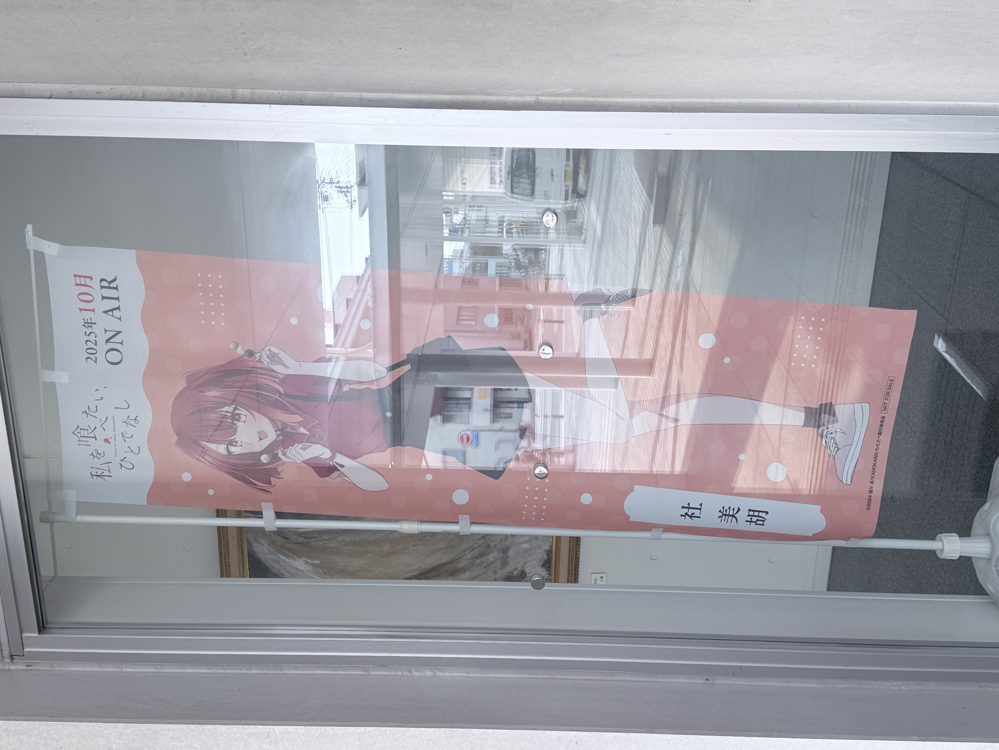
そっからさらに歩いて五色姫通りに行って、五色濱神社参拝した来ました。管理のおじさんがいてびっくりしたりなんか社に上がれたりと、なかなかに面白いとこでした。
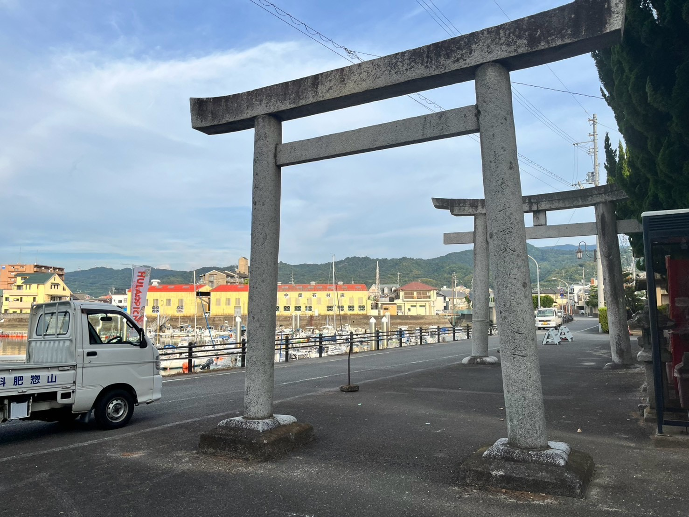
歩いてすぐに萬安港旧灯台で記念撮影とかしました。
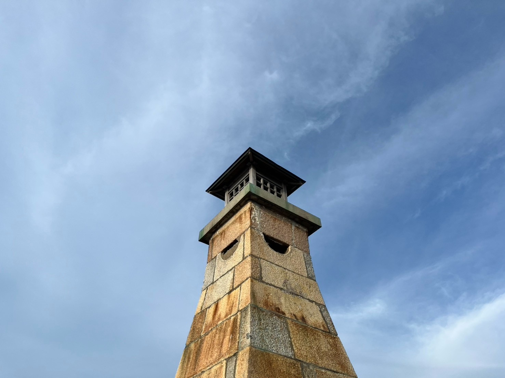
そのまま五色姫海浜公園、妖怪大バトルのところですな。キレイはきれいだったんですがこの時筆者は頭が（熱中症で）かち割れそうなくらい痛かったので賞味そんな思い出ありません。夕日がきれいだったくらいです。
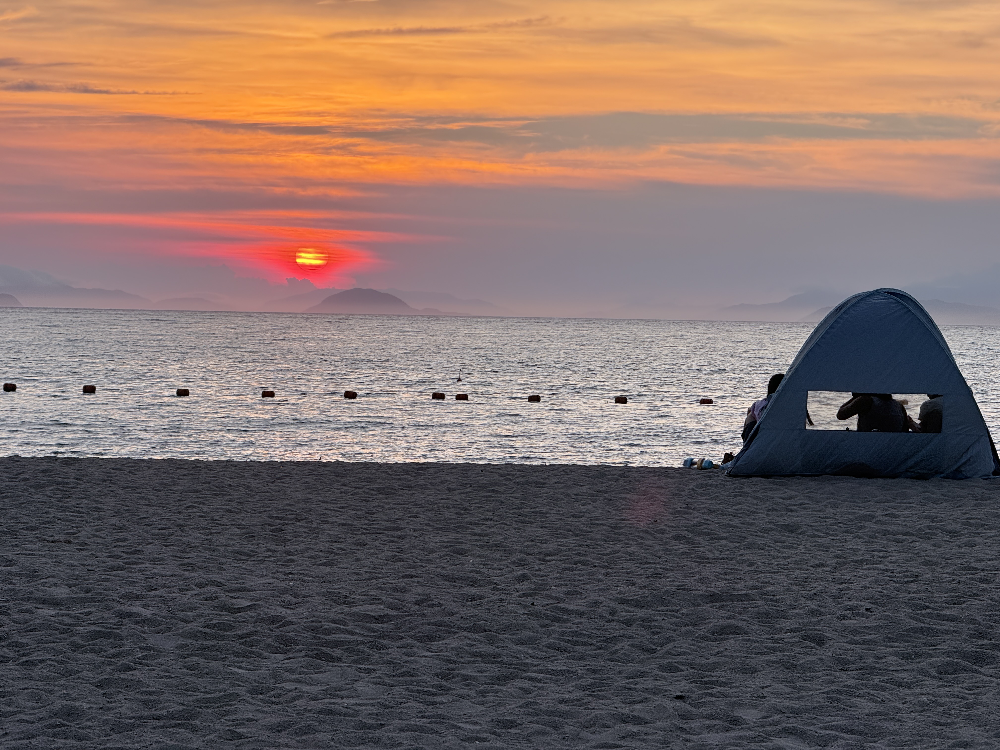
で、さっすがにやばいので近くのスーパーマーケット（確かFUJIって名前）でオーエスワン買って、頭を物理的にクールダウンし、夕食を買ってHOTELに行きました。ホテルは普通のとこでした。なぜかテレビでAVが見れますが。
二日目
二日目は朝に弱い友達のおかげで（）朝から予定が狂うという革命的な開始でした。電車が一時間に一本なんで8時逃したら次は9時なんですよね。(*´Д｀)
文句を言っても仕方ありません。歩いて県庁とか見てました。で特急宇和海のって八幡浜行きました。八幡浜はあれですね、スズメの戸締りのとこです。なので八幡浜港に行きました。
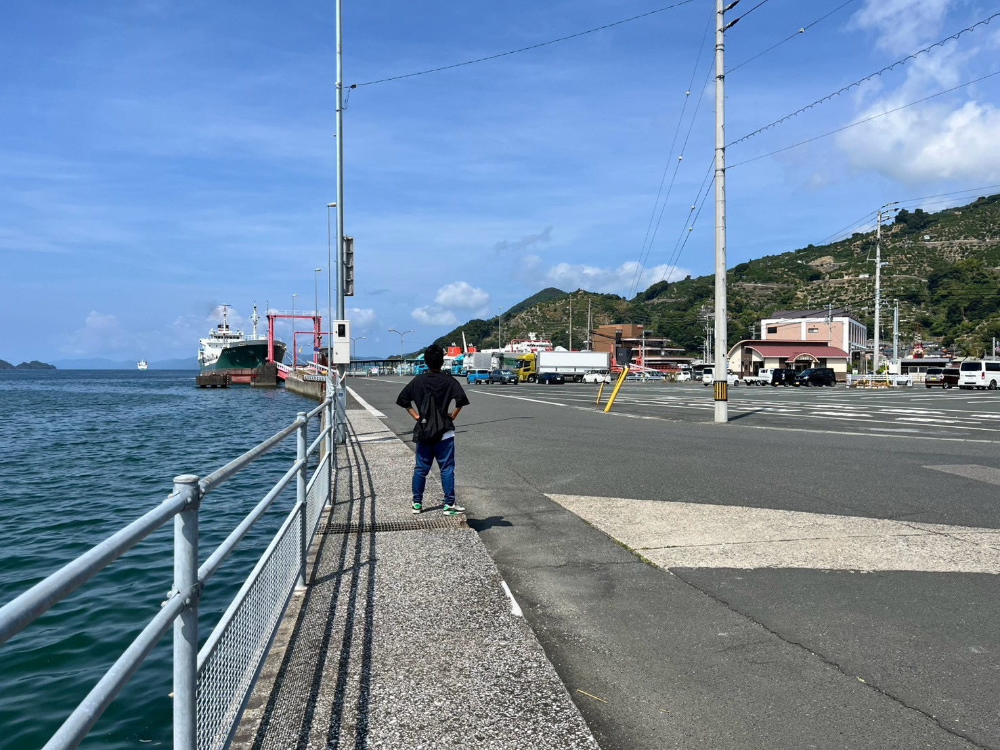
そしてこっから王子の森公園にある機関車を見る予定だったんですが・・・時間の都合上カット。
再び特急宇和海に乗って伊予大洲に行き、スズメの戸締りの聖地巡礼と大洲城を見たかったんですが・・・再び時間によりカット。
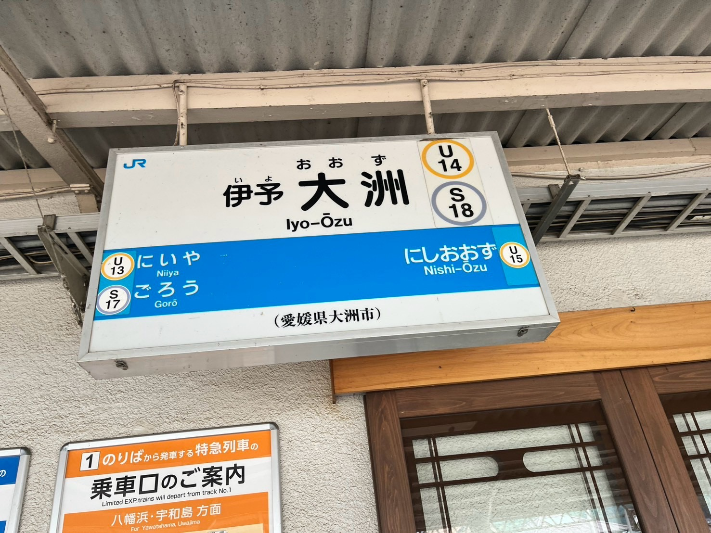
こっからは通称”山線”に乗って伊予長浜へ。そして歩いてンョ゛ハーにいってきました。その時は明日休業になるということで丁度いいタイミングで訪問できました。（後にニュースで見た感じ、看板は改装しても残るそうです。） そこで昼食を（席に座りたかったので）駅の待合室食べてたら、近所の人がいたので喋って電車にのりました。
乗ってついたのは下灘駅。言わずと知れた二次元のイェルサレムみたいな場所です。めちゃめちゃ人が多く、整理するため社員とかが来てました。
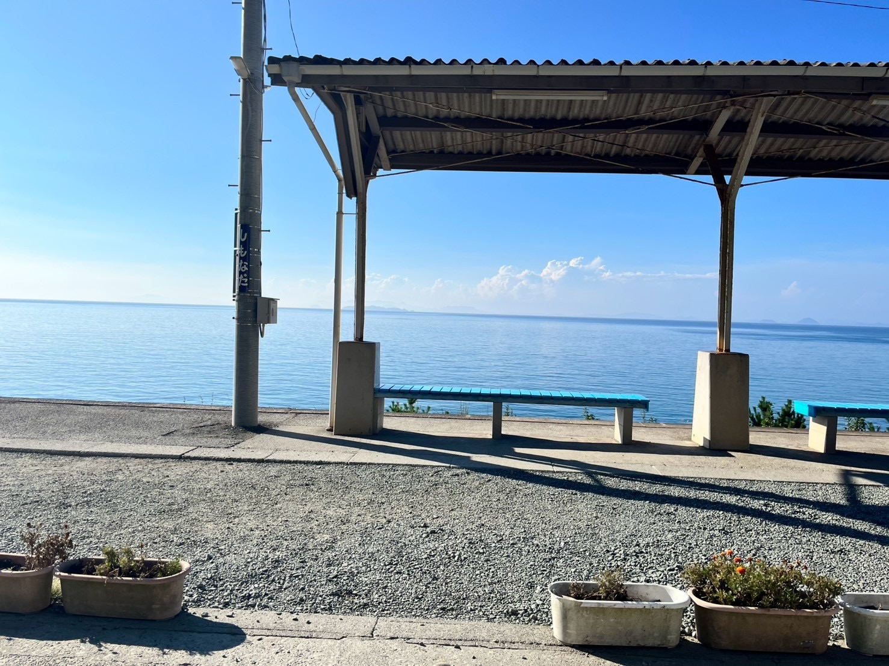
再び電車に揺られ、着いたは伊予上灘駅。作中だと比名子×汐莉のデートの駅です。
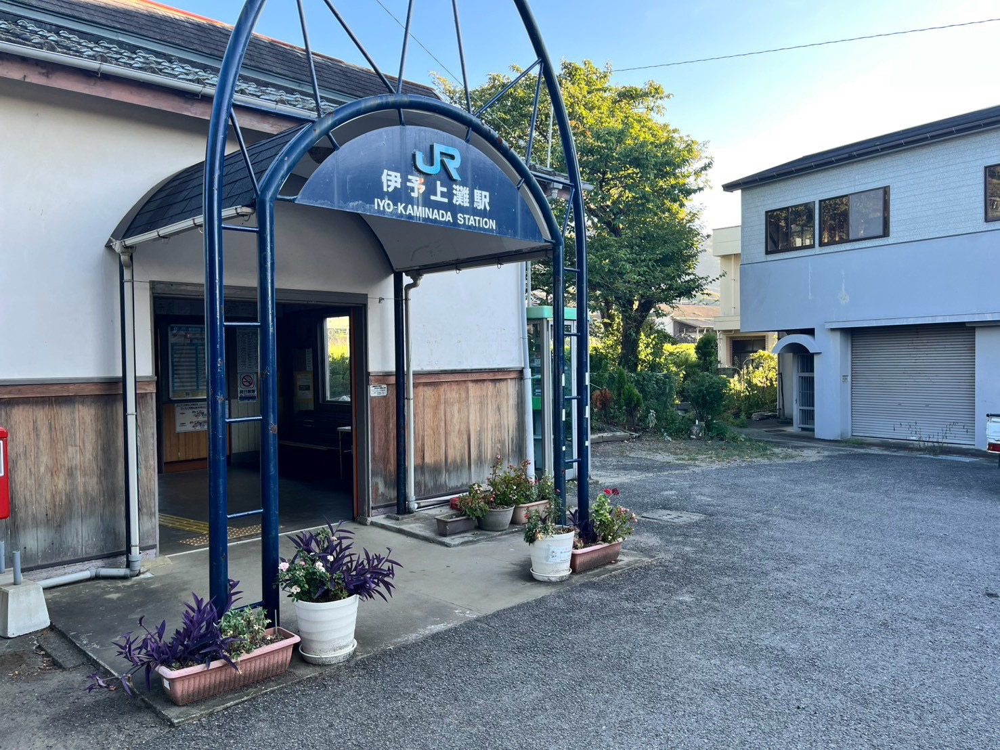
何人かの同業者？と共に次のスポットを目指します。
次は道の駅ふたみ。ここもホントは人魚のパネルがあるはず・・・ですが時間的に締まってました。FUCK！と叫びたいところですがそもそもほかの同業者を見た感じ殆ど（99％）が車でしたので仕方ないですね。
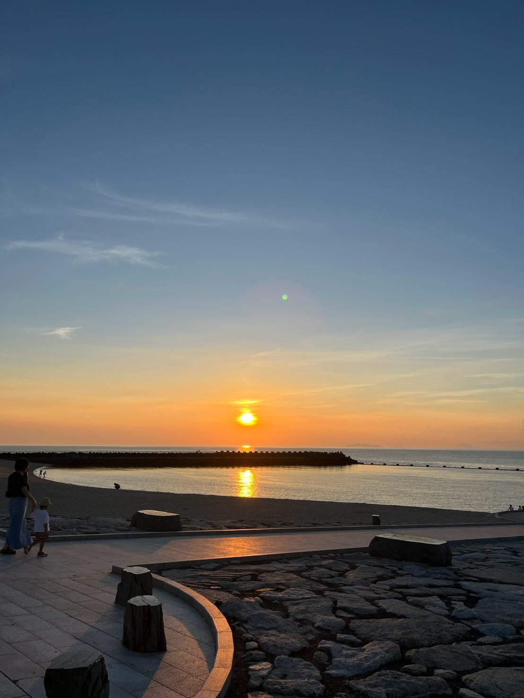
時刻表の関係で三時間ここにいないといけないので近くにあった四国の地図でセシル・ローズごっこをしたりして時間をつぶしました。
最後は伊予市駅で下車し、灘町ポケットパークを目指します。ここはあれですね、 比名子が汐莉に「信じてたのに・・・”ひとでなし”」って言って脳を破壊したところです。（あざみさんに重なるのエモいよね。） その日はお祭りだったので座れはしませんでしたが、ぶっこけてたおば様を救助できたのでOKです。
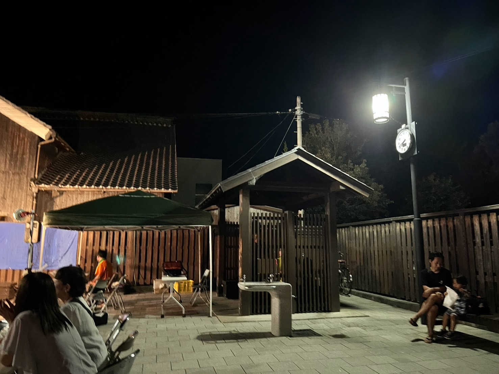
そしてこれでHOTELにかえり終わりです。いやぁ疲れますね。
（平気な顔して言ってますが二日連続で三万歩歩いてます、マジで痛いです。）
三日目
三日目、最終日です。もう終わりかと寂しさを感じながら行動を開始しました。
まず最初に（私は）お土産を（伊予鉄）松山市駅で買いました。駅のすぐ近くにある木村蒲鉾店で買いました。
セットで3000円のやつでしたが滅茶苦茶美味しかったです。次ぎ来た時も買いたいなぁ・・・。
バスにギリギリ滑り込んで向かうは愛媛県立とべ動物園。美胡×汐莉のデート？の時のやつですね。
入ろうと思い、バスを降りるときにバス運転手から一言。「今日は閉まってますが大丈夫ですか？」これはさすがにFUCK。
どれだけついてないんだろう？ああ、神（美胡）よ。これは何かの天罰なのだろうか。
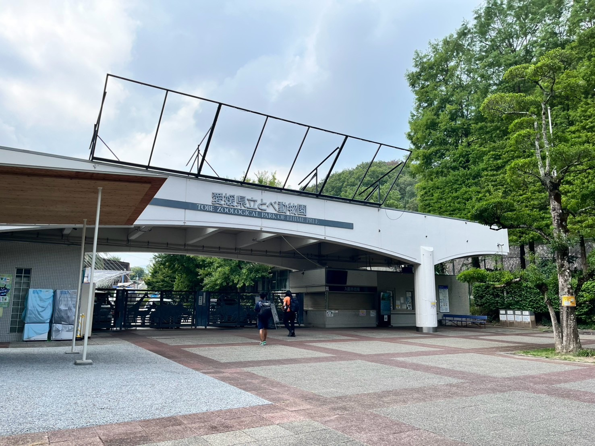
そんなこんなで再び松山市街に帰ってきた。やることもないのでアニメイト松山を来店。 友達Aはここでわたたべ全巻を一気買い。
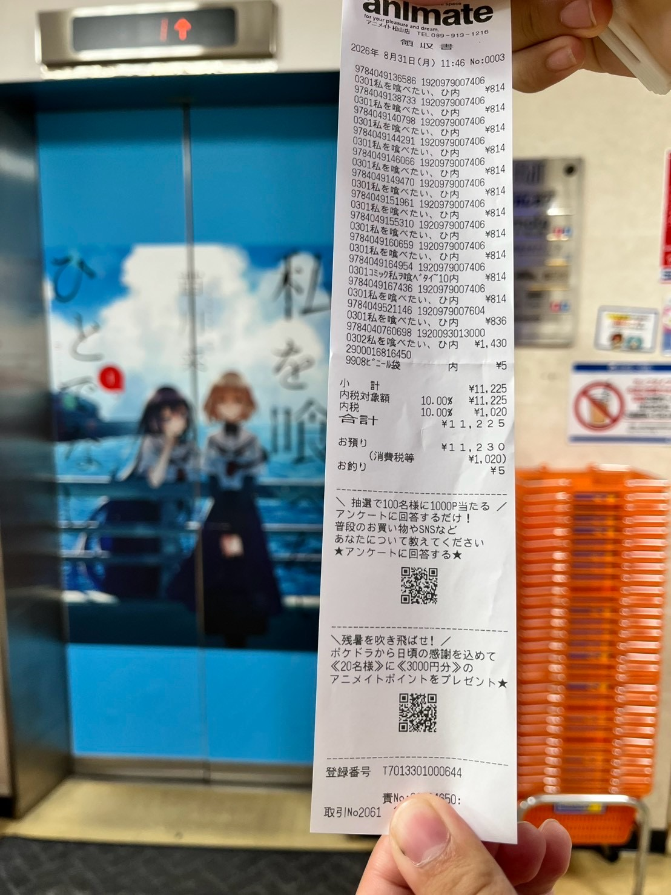
友達Bは灰宮～とかを買ってました。
筆者は金欠のため、ここではグッズを買いませんでした・・・。どんぶり勘定がこんな所で・・・。
さて、最後のスポットです。そう、松山旅行どころか愛媛旅行のド定番、道後温泉です。
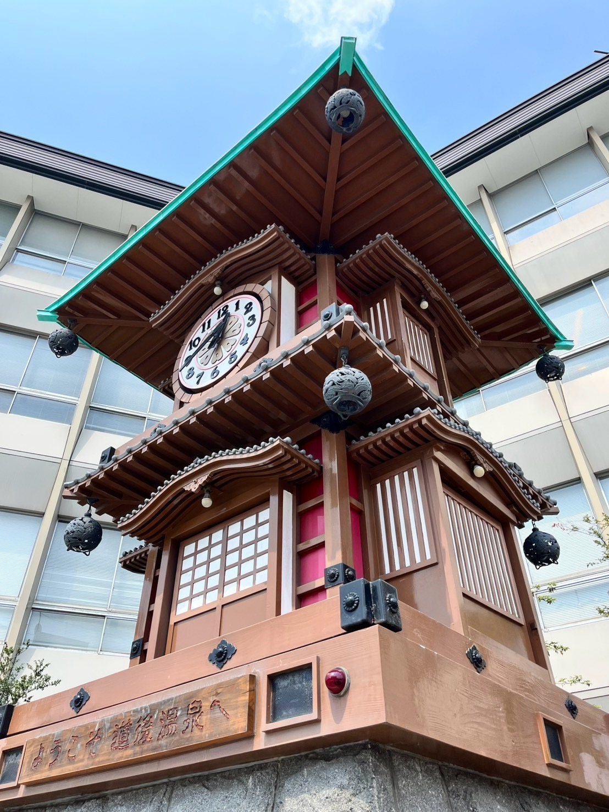
もちろんのこと、ここに来たのも聖地巡礼のため。しっかり顔はめパネルと「汐莉さんのほうが似合ってる！」の所です。 見てみたらパネルがありました。しれっとQRもあったのでしっかりチェック。ああぁあ、癒されるんじゃぁぁ。
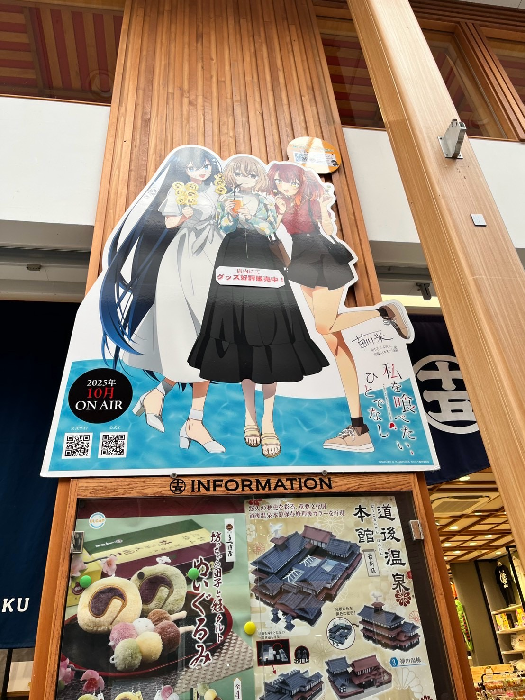
ちなみに道後温泉までは電車・・・ではなく路面電車が走ってるのでぜひ乗ってみてほしい。
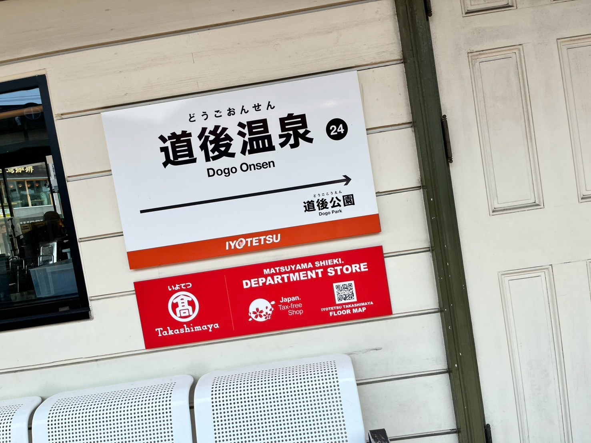
さて、これで予定はすべて終わり。あとは帰るだけです。
松山駅に着き、15:28分発、しおかぜ24号に乗り込みました。
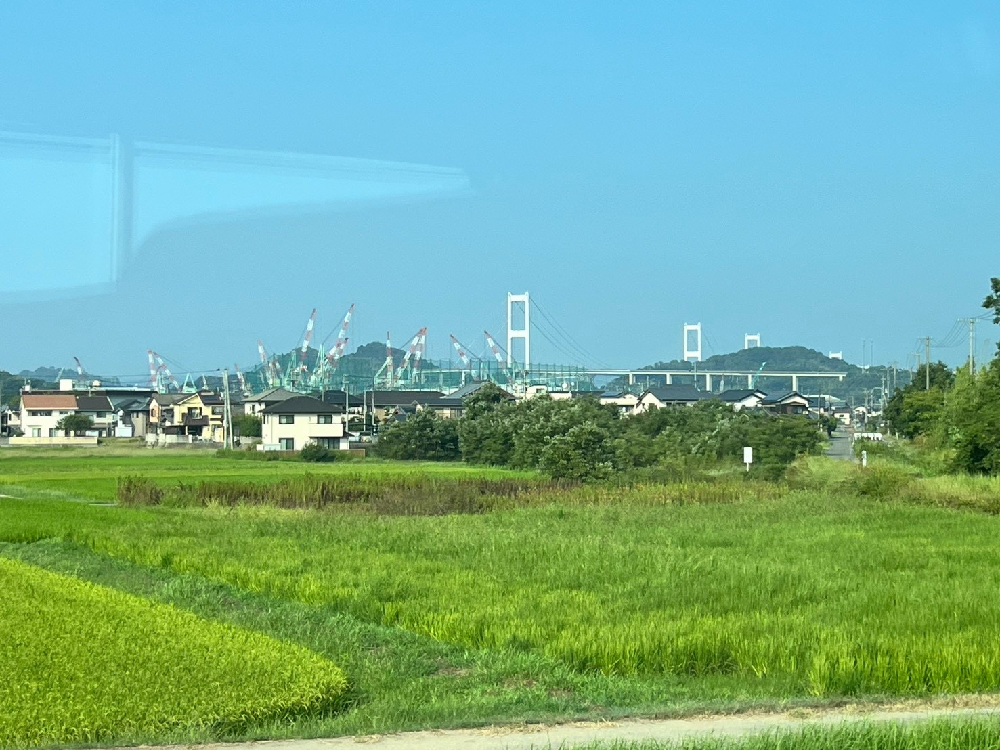
やっぱ瀬戸内はいいなぁ（羨望）。移り住むなら瀬戸内沿岸がいいなぁなんて思いながら 友達Bが買ってた百合漫画を見ながら電車に揺られました。（脳が回復する音）
そして18:11分、岡山着。この時特急やくもが見れてびっくりしたり。まさかヴィバンの出演のやつが見れるとは・・・。 でそんなこんなで18:20分岡山出発。
19:55分、名古屋着。 名鉄名古屋駅の構内にある吉野家で夕食を取り、太田川で解散しました。

いやぁ。楽しかった。
まとめ
やっぱり旅行はいいですなぁ。瀬戸内の飾らない綺麗さというか、そんな感じが堪らなく好きだ。
都市化と寒村の狭間のような、そんなような田園風景がいいですなぁ。前、松江に行った時もそんな感じだったし、
なんか田舎っぽくない田舎が好きなのかね。（自問自答）わたたべの聖地巡礼もできたし良かったです。
現実的な話をすると、多分六～七万もあれば楽しめる感じでしょう（宿泊費・交通費込々）。
友達Aのようになんかガツンとグッズとかで使いたいならもっと上乗せすればいいでしょう。
（友達は念を入れて十万持ってていました。）
駄文でしたがここまで見ていただきありがとうございました。
他にも記事を書いていく予定ですので是非是非ご覧ください。
あとわたたべにご興味を持ちましたら、
各種配信サービス（例、アマゾンとか）でも配信されてますのでアニメだけでも良かったらご覧ください。